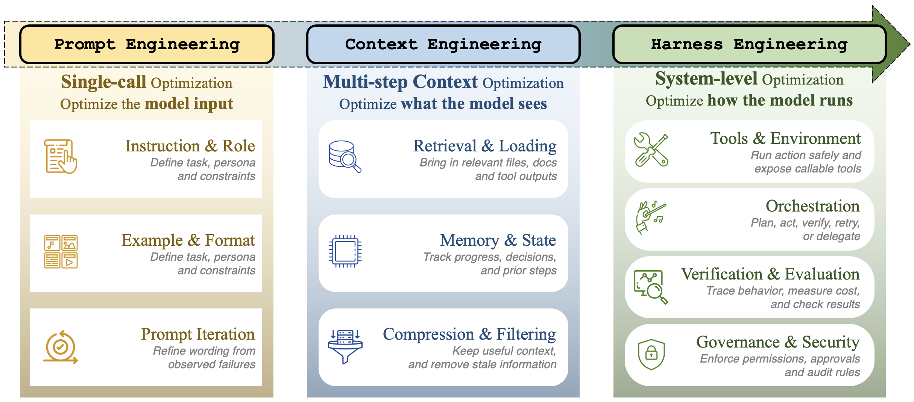
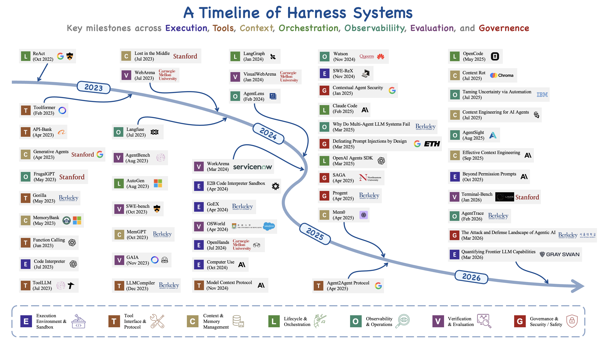
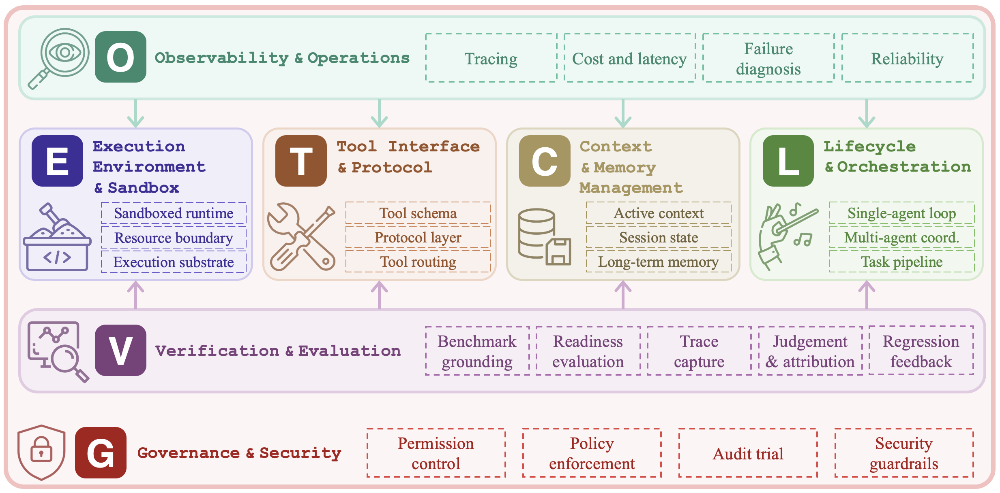
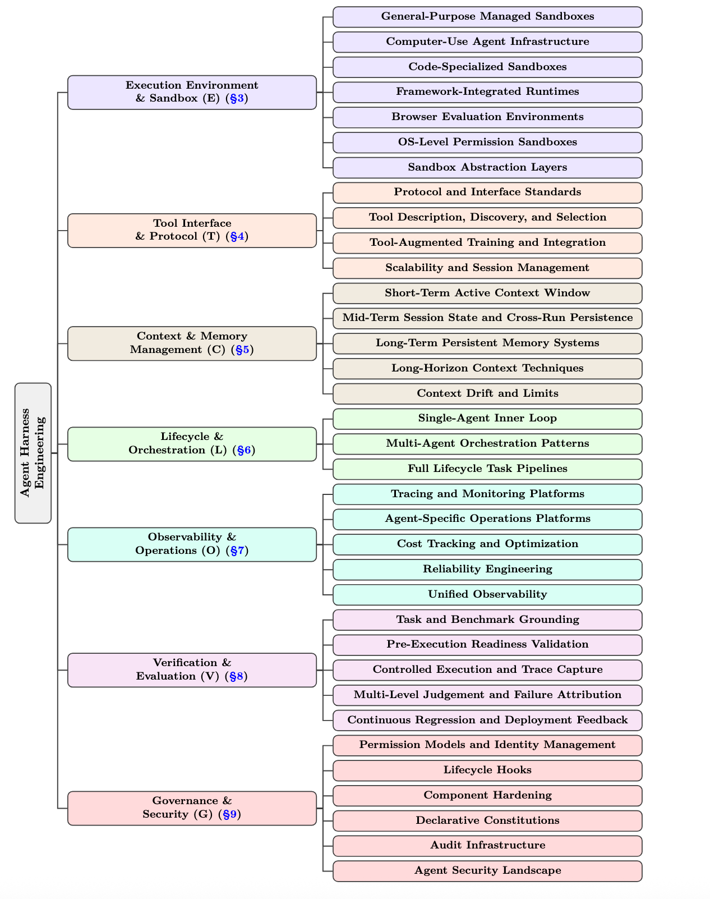
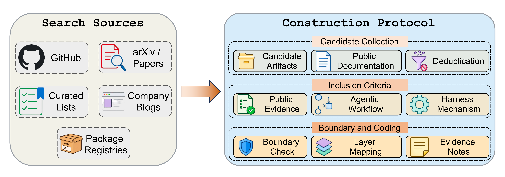

Harnesses are independent system layers.
Real-world reliability is shaped by execution controls, feedback loops, governance, evaluation, and operational design, not only by model capability.

Abstract
The rapid deployment of large language model agents in production has revealed a recurring pattern: task execution reliability depends less on the underlying model than on the infrastructure layer that wraps it, the agent execution harness.
This survey presents agent harness engineering as an independent system layer, proposes the seven-layer ETCLOVG taxonomy (Execution, Tooling, Context, Lifecycle, Observability, Verification, Governance), and maps a broad corpus of open-source projects onto that taxonomy to expose ecosystem patterns, coverage gaps, and emerging design principles.
Contributions
Real-world reliability is shaped by execution controls, feedback loops, governance, evaluation, and operational design, not only by model capability.
Execution, Tooling, Context, Lifecycle, Observability, Verification, and Governance expose architectural boundaries that earlier frameworks often conflate.
A systematic mapping of the open-source ecosystem surfaces adoption patterns across sandboxes, protocols, memory systems, orchestrators, observability platforms, benchmarks, and governance stacks.
Read across 2022–2026, agent engineering has gone through a coherent shift in where the marginal effort lands. The three phases overlap in time and concept; they describe what the field has chosen to engineer, not a clean sequence of replacements.
The same shift is visible in the systems themselves. The ReAct era of 2022–2023 wrapped a single model loop with a while-loop, a prompt template, and a small tool dispatch table; AutoGPT and BabyAGI exposed the resulting failures, including execution runaway, context blowout, state loss, and unmonitored side effects, as infrastructure problems rather than prompt problems. Tool integration and multi-agent coordination from 2023–2024 added learned tool use (Gorilla, ToolLLM, Toolformer), role-playing organizations (CAMEL, ChatDev, MetaGPT, Mixture-of-Agents), the first agent benchmarks (SWE-bench, AgentBench, WebArena, GAIA), and the beginnings of protocol standardization (MCP, A2A). By 2025–2026 enough deployment experience had accumulated that “harness engineering” began to be named as a discipline of its own, accompanied by automated harness optimization and a wave of results in which only the harness was varied.

We organize the harness into seven layers. The first four describe the structural core of a harness; the last three describe the control plane around it. Compared with earlier six-component frameworks, Observability and Governance appear here as independent layers because, in production deployments, each has its own tooling stack and is owned by a different team.


To make the taxonomy concrete, the survey codes a broad corpus of open-source agent-harness projects against ETCLOVG, using the public artifact itself (README files, documentation, papers, examples, release notes) as the evidence. The corpus is maintained as a living catalog at Awesome-Agent-Harness, and contributions are welcome through pull requests.

Coding is multi-label: a project's primary layer marks the mechanism most central to it, while secondary layers are assigned only when the public documentation exposes an independent capability. The counts below reflect primary assignments in the current snapshot.
| Layer | Scope | Primary projects |
|---|---|---|
| E | Execution environment & sandbox | 20 |
| T | Tool interface & protocol | 12 |
| C | Context & memory management | 9 |
| L | Lifecycle & orchestration | 47 |
| O | Observability & operations | 15 |
| V | Verification & evaluation | 21 |
| G | Governance & security | 14 |
Reading the corpus in aggregate, Execution, Tooling, Lifecycle, and Verification have the densest visible coverage: coding, web, terminal, and computer-use agents all require runnable environments, tool contracts, control loops, and repeatable evaluation before they can be useful. Context and memory appear across many projects but are often embedded inside larger frameworks rather than released as standalone components. Observability and Governance are thinner in open source and more often live inside commercial platforms, SDK features, or engineering writeups, suggesting that operational control has matured later than runtime and benchmark infrastructure.
Composing the seven layers creates system-level constraints that no single layer can resolve alone. The survey distils these effects into three recurring patterns.
A related shift runs through the corpus: from agent frameworks, which package local abstractions (agents, tools, memory, execution loops), to agent platforms, which add durable workspaces, identity, observability, evaluation, governance, and human handoff across many runs and many users.
Five questions remain open across the taxonomy. Each follows from the cross-layer synthesis rather than from a single ETCLOVG layer in isolation.
If you find this survey useful in your research, please consider citing:
@misc{li2026agentharness,
title = {Agent Harness Engineering: A Survey},
author = {Junjie Li and Xi Xiao and Yunbei Zhang and Chen Liu and
Lin Zhao and Xiaoying Liao and Yingrui Ji and Janet Wang and
Jianyang Gu and Yingqiang Ge and Weijie Xu and Xi Fang and
Xiang Xu and Tianchen Zhao and Youngeun Kim and
Tianyang Wang and Jihun Hamm and Smita Krishnaswamy and
Jun Huan and Chandan K. Reddy},
year = {2026},
note = {Preprint}
}